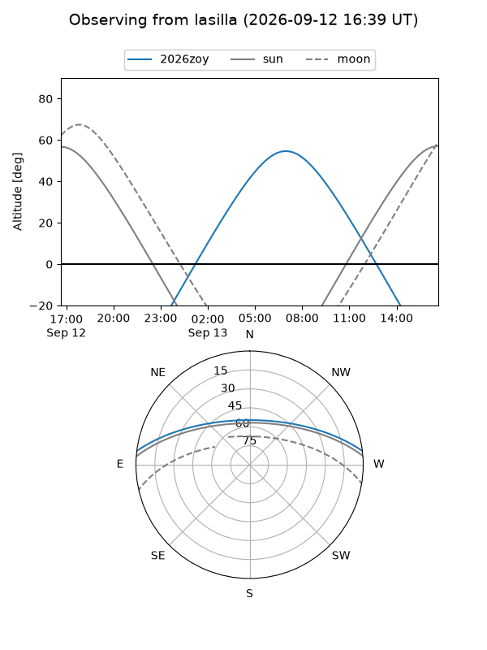
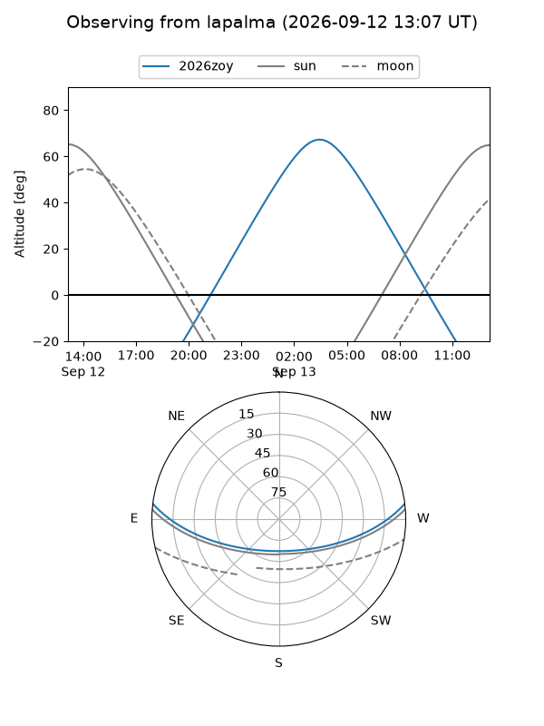
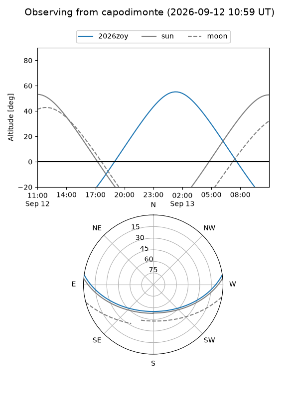
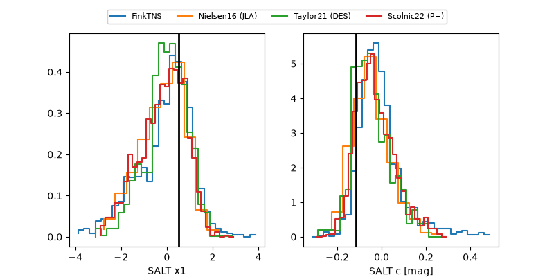

2026zoy
Target 2026zoy at 2026-09-13 11:57
Aliases and brokers:
FINK-ZTF: ztf.fink-portal.org/ZTF26abqhtiz
Lasair-ZTF: lasair-ztf.lsst.ac.uk/objects/ZTF26abqhtiz
ALeRCE-ZTF: alerce.online/object/ZTF26abqhtiz
YSE-PZ: ziggy.ucolick.org/yse/transient_detail/2026zoy
TNS name: wis-tns.org/object/2026zoy
Direct TNS query: direct search
alt names
ZTF26abqhtiz (ztf,fink_ztf)
2026zoy (tns,yse)
Coordinates:
equatorial (ra, dec) = 25.6123,+5.93212
equatorial (HMS+DMS) = 01:42:26.94,+05:55:55.63
galactic (l, b) = (145.2701,-54.71206)
Flags:
TNS type: nan
peak dt: +14.7
Photometry:
last ztfg=20.17, ztfr=19.61
6 ztfg, 5 ztfr detections
Lightcurve
Visibility



Additional plots
